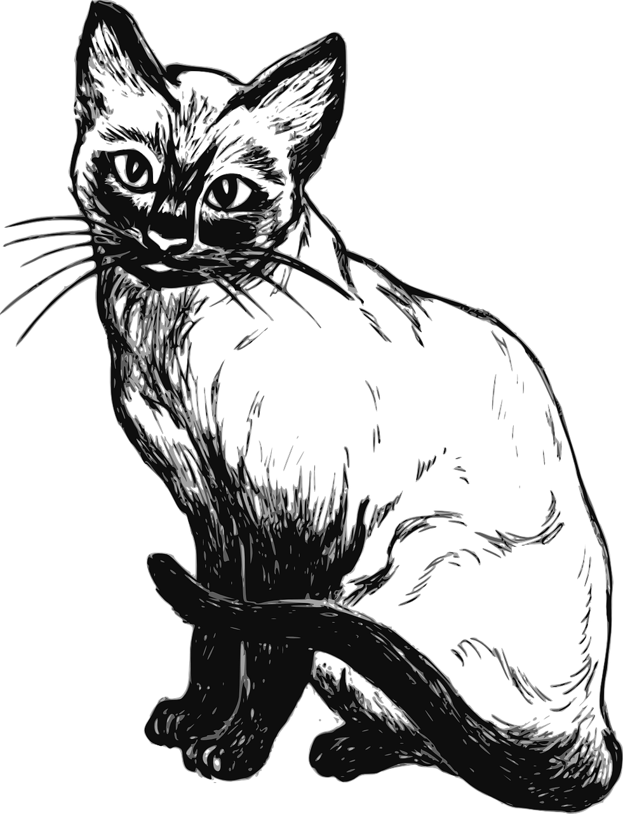
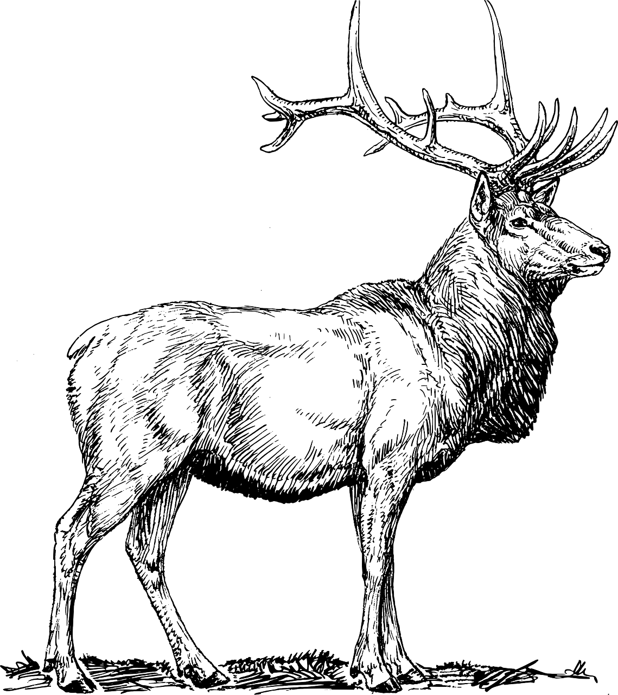

Some Informations

Join us in 'Unveiling the Wonders: Where Every Creature Tells a Tale' as we unveil the charming story of Whiskers, a feline adventurer. From playful antics to moments of purr-fect serenity, Whiskers' tale captures the whimsical essence of cat life. Dive into the world of 'Whiskers of Whimsy' and discover the captivating allure of our feline friends.

Embark on the enchanting journey of 'Unveiling the Wonders: Where Every Creature Tells a Tale' with our latest chapter, "Graceful Wanderer: A Deer's Journey." Follow the story of Daisy, a gentle deer, as she gracefully navigates the serene forests, illustrating the beauty, resilience, and harmony of nature.
In the enchanting series, 'Unveiling the Wonders: Where Every Creature Tells a Tale,' we present the majestic story of Leo, a lion whose roar echoes through the savannah. From his early days as a cub to reigning over the pride, Leo's tale reveals the regal spirit and untamed beauty of the king of beasts. Join us in exploring the wilderness and celebrating the awe-inspiring legacy of 'Roar of Majesty: The Lion's Tale.'
 Discover 'Unveiling the Loyalty: A Dog's Tale,' where Max, a rescued companion, embodies the wonders of canine devotion. From the bustling city to a loving home, Max's story unfolds in loyalty and boundless joy. Join us in celebrating the profound connection that dogs bring to our lives, a tale of unwavering companionship
Discover 'Unveiling the Loyalty: A Dog's Tale,' where Max, a rescued companion, embodies the wonders of canine devotion. From the bustling city to a loving home, Max's story unfolds in loyalty and boundless joy. Join us in celebrating the profound connection that dogs bring to our lives, a tale of unwavering companionship